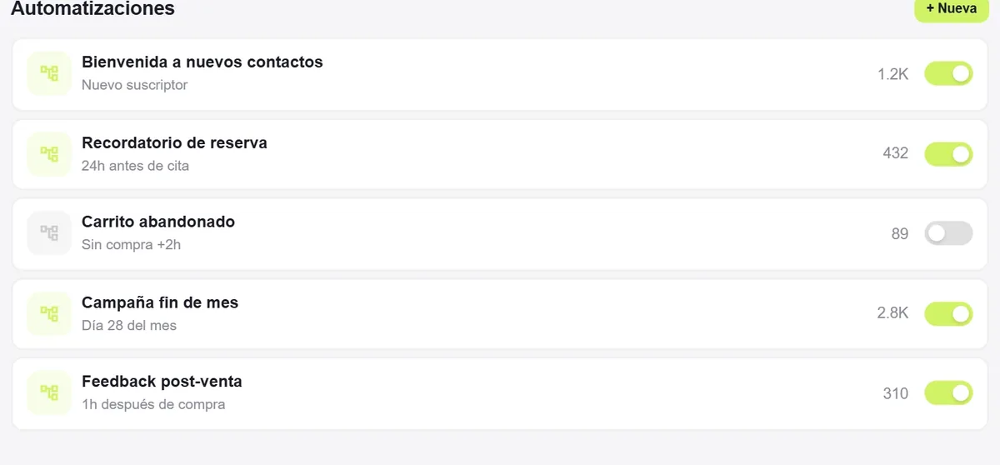
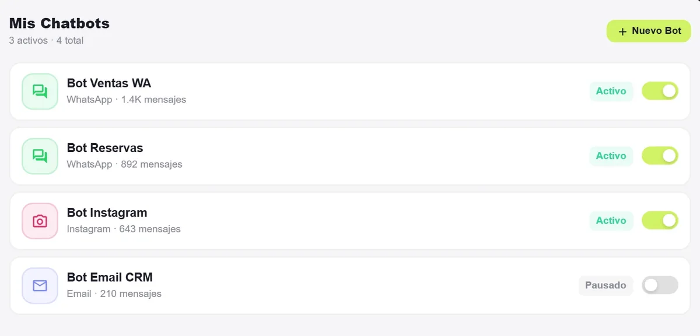
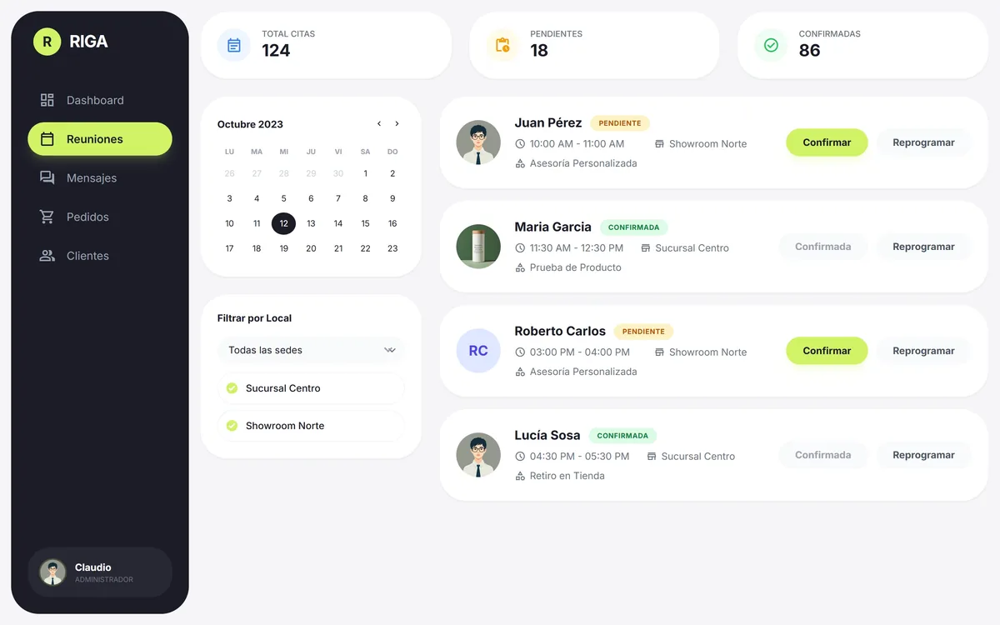

SaaS B2B
UcoBot
De un mensaje de chat a un pedido, una reserva o un seguimiento, para personas que nunca configuraron un bot.


Resumen del proyecto
- Industria
- SaaS para gastronomía, comercio y servicios
- Producto
- Chatbots con IA, CRM y operación: panel web y apps para Windows y Android
- Mi rol
- Diseño UX/UI
- Responsabilidades
- Experiencia de contactos, seguimientos y ventas; dashboards y patrones de interfaz
- Equipo
- Producto de Codea Desarrollos
- Herramientas
- Figma
- Estado
- Publicado. Sitio, documentación de API y apps de escritorio y Android (versión 1.2.5, octubre de 2026)
Las pantallas son las vistas previas publicadas en el sitio de UcoBot, con datos y nombres de negocio de ejemplo. Las cifras comerciales de ese sitio no se usan en este caso.
En un minuto
Problema
Muchos negocios venden por WhatsApp e Instagram. Gestionar clientes a mano significa mensajes sin responder, seguimientos olvidados y ventas perdidas.
Enfoque
Diseñé una experiencia que centraliza contactos, automatiza seguimientos y ordena el proceso de ventas, y que expresa una plataforma técnica con verbos que el equipo ya usa: responder, confirmar, cobrar, recordar.
Resultado
Un producto publicado donde seis módulos comparten un mismo lenguaje visual, del chat con IA al punto de venta, y se configuran desde un panel sin escribir código.
01El desafío
Tecnología potente para personas sin tiempo de aprenderla.
Detrás de un mensaje respondido hay un modelo de lenguaje, dos APIs de Meta, un catálogo, una agenda, una caja y una impresora térmica. Quien lleva el negocio no debería ver nada de eso.
El producto vive en tres contextos que comparten datos, pero no atención. Cada uno necesita una cantidad distinta de interfaz.
| Contexto | Quién | Qué importa | Dónde |
|---|---|---|---|
| El chat | El cliente del negocio | Una respuesta rápida, humana y una confirmación clara | WhatsApp, Instagram |
| El panel | Quien gestiona el negocio | Saber qué requiere atención y configurar una sola vez | Web |
| El mostrador | Quien toma pedidos y cobra | Velocidad, stock e impresión sin diálogos | Windows, Android |
02Investigación y descubrimiento
Los límites de la plataforma son parte de la experiencia.
En un producto de mensajería, la falla cara es una regla del canal que sorprende a alguien en medio de una venta.
Leer la documentación pública de la API con ojos de diseño convierte errores técnicos en situaciones que alguien tiene que entender en el mostrador.
| Regla de la plataforma | Código de la API | Implicancia de diseño |
|---|---|---|
| Pasadas 24 horas sin mensajes del contacto, se cierra la respuesta libre | outside_24h_window | Mostrar cuánto queda de ventana antes de escribir, no después de que falle el envío |
| Un número o una cuenta puede desconectarse | channel_not_connected | Estado de conexión visible en la bandeja, con una acción para reconectar |
| Meta puede rechazar un mensaje | channel_error | El mensaje queda en el hilo con su estado y un reintento |
| Contesta la IA de UcoBot o el software del negocio | ai_mode | Decir siempre quién responde: el bot o una persona |
Evidencia
Lo que se sabía
- La gestión de clientes era manual y se perdían oportunidades
- El negocio configura desde un panel, sin código
- Las reglas del canal de arriba, de la documentación pública
Supuestos
Lo que se diseñó como hipótesis
- Las personas piensan en clientes y pedidos, no en bots y flujos
- Ver quién responde genera confianza en la automatización
Pendiente
Lo que falta confirmar con uso real
- Usabilidad en un turno real, con el local lleno
- Cómo nombra cada rubro los mismos conceptos
03Recorridos y flujos
Un mensaje, tres desenlaces posibles.
Entrada
El cliente escribeWhatsApp, InstagramPrimera respuesta
Responde la IACon el catálogo y el tono del negocioIntención
PedidoReservaNecesita una personaEn el panel
Tarjeta de pedido y cajaAgenda: pendiente o confirmadaDerivación, con todo el historialResultado
Comanda impresaRecordatorio automáticoConversación atendida
Arquitectura de información
Seis módulos y un objeto en común: el cliente. Cada módulo responde una sola pregunta.
| Módulo | Pregunta que responde | Acción principal |
|---|---|---|
| Chatbots con IA | ¿Quién responde en cada canal? | Activar, pausar |
| Automatizaciones | ¿Qué pasa sin que nadie lo haga? | Definir un disparador |
| Reservas | ¿Quién viene y quién falta confirmar? | Confirmar, reprogramar |
| Punto de venta | ¿Qué se está vendiendo ahora? | Cobrar |
| Promociones | ¿Qué promos corren y hasta cuándo? | Crear, pausar |
| Analítica | ¿Qué requiere atención hoy? | Abrir el detalle |
04Exploración de diseño
Del concepto técnico a la frase de todos los días.
El patrón que más simplifica es verbal: cada concepto técnico se traduce a las palabras de quien lo usa.
| Concepto técnico | En la interfaz | Por qué |
|---|---|---|
| Disparador programado | “24 h antes de la cita” | Se lee como una frase, no como una regla |
| Evento de inactividad | “Sin compra +2 h” | Nombra lo que el negocio nota |
| Flujo habilitado o no | Un interruptor en cada fila | Estado y acción en el mismo lugar |
| Restricción de stock | “Agotado” y un botón bloqueado | Previene el error en lugar de explicarlo |


05Sistema de diseño
Un marco oscuro, un espacio claro y un color para la acción.
La paleta llega al producto como tokens semánticos (primary, sidebar, muted, destructive, ring): cambiar un color es cambiar un valor y no buscar por pantallas.
Color
- Lima · acción
#D1F366 - Tinta · marco
#1C1C28 - Espacio de trabajo
#F9FAFB - Texto secundario
#64748B - Confirmado
#22C55E - Información
#3B82F6 - Pendiente
#F97316
Auditoría de contraste
| Combinación | Muestra | Relación | Resultado |
|---|---|---|---|
| Tinta sobre lima (botones) | 13,42:1 | AAA | |
| Lima sobre tinta (menú) | 13,42:1 | AAA | |
| Texto secundario sobre blanco | 4,76:1 | AA | |
| Etiquetas en gris claro sobre blanco | 2,54:1 | No apto para texto Reemplazar por texto secundario | |
| Lima sobre blanco | 1,26:1 | No apto para texto Sólo como fondo |
Patrones reutilizables
- Tarjeta de métrica: ícono, variación, valor y una frase que dice qué hacer con eso
- Fila con estado: nombre, contexto, estado escrito y la acción a la derecha
- Tarjeta de pedido dentro del chat: producto, total y estado en un bloque
- Una familia tipográfica (Inter) y radios amplios que separan módulos sin bordes
06Solución final
La misma gramática en todos los módulos.




Una sola bandeja WhatsApp e Instagram juntos, con el canal en cada contacto. 
El pedido, dentro del chat Dice quién atiende y cierra con un resumen que se puede revisar.


07Implementación y colaboración
Diseñar dentro de un producto que construyen otras personas.
UcoBot es un desarrollo de Codea Desarrollos. Mi aporte es la experiencia y la interfaz; la ingeniería, la IA y la infraestructura son del equipo.
- El producto público corre en Next.js, con la paleta implementada como variables CSS
- Las apps de escritorio y Android llevan el panel a la caja e imprimen sin abrir un diálogo
- Conocer React, CSS y APIs REST me permite discutir estados, límites y costos antes de dibujar la pantalla
08Resultados e impacto
Lo que el producto permite hacer hoy.
- 6módulos con un mismo lenguaje visual
- 2canales de mensajería en una bandeja
- 0líneas de código para configurar un bot
- 3plataformas: web, Windows y Android
Las cifras de adopción y conversión no forman parte de este caso: son del negocio y no puedo auditarlas.
09Aprendizajes y próximos pasos
En SaaS, los estados son el producto.
Aprendizajes
- La automatización genera confianza cuando dice qué está haciendo y cómo frenarla
- Un color de marca muy brillante necesita una regla: en UcoBot, el lima funciona como fondo y no como texto
- Nombrar es interfaz: el verbo correcto ahorra un tutorial
Próximos pasos
- Probar la caja con quien la usa, en un turno real
- Reemplazar las etiquetas en gris claro y el texto lima sobre blanco
- Diseñar el estado vacío y el primer día de cada módulo